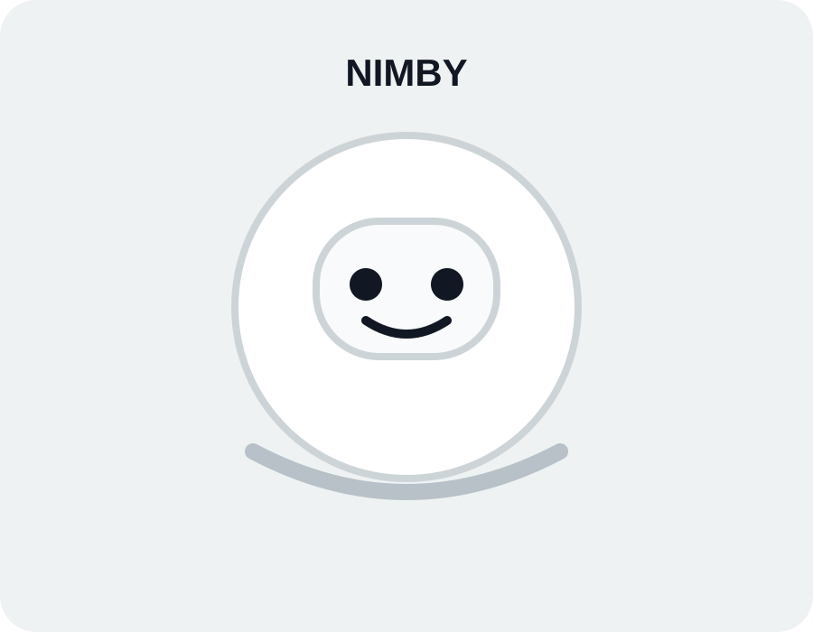

The product
Your personal AI companion.
Nimby is a product concept bringing useful AI assistance, smart-home support, organization and companionship into everyday spaces.

Built around you
Simple interaction. Practical help.
Nimby explores a more natural way to interact with AI without making everyday tasks feel technical.
Conversation
Interact naturally instead of navigating complex menus.
Home
Bring common smart-home controls into one approachable interface.
Awareness
Designed around home awareness and useful alerts.
Companionship
A physical presence for everyday questions and conversations.